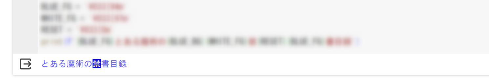
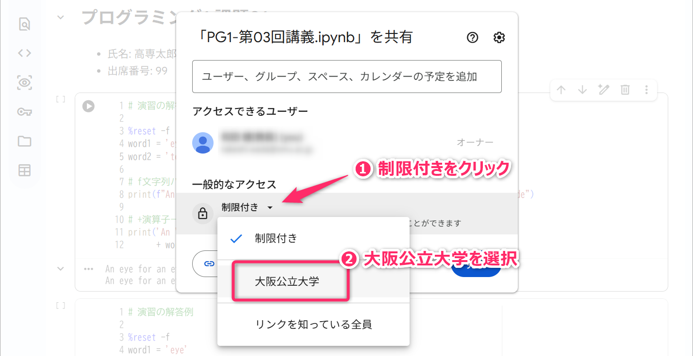
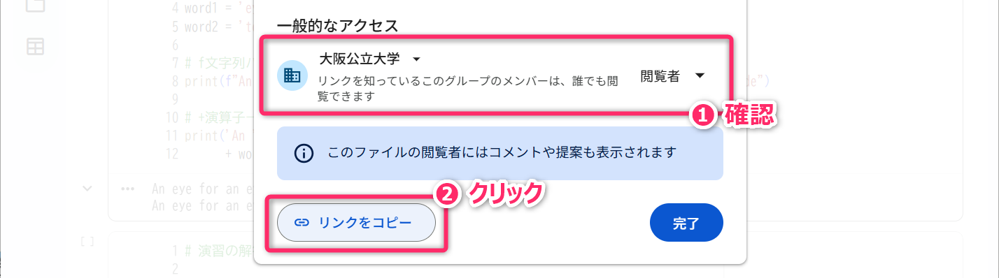
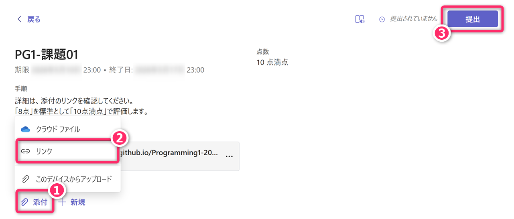
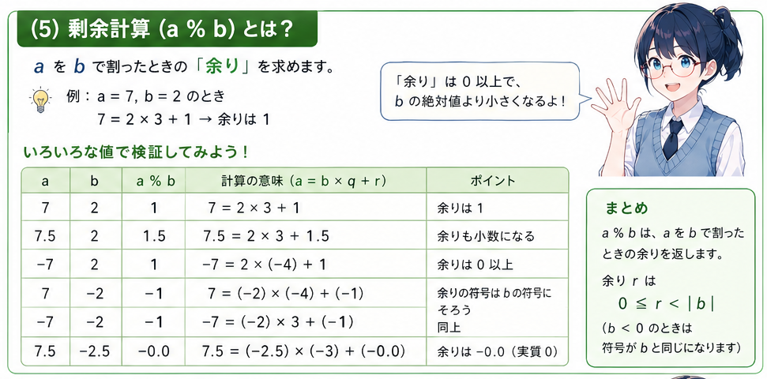
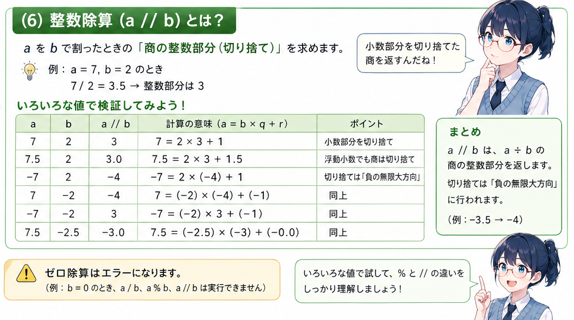
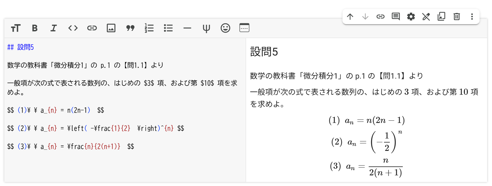

1 連絡事項と講義概要
- 小テスト1 を実施します。鉛筆と消しゴムを準備してください。
再掲：小テストを実施した授業に遅刻・欠席した場合
遅刻や欠席（公欠・忌引き・出席停止を含む、理由を問わない）により、小テストを受験できず追試験を希望する者は、当該授業日を含めて2日以内に、TeamsChat で追試験の実施依頼 の連絡をしてください。
例えば、4月20日（月）の授業で実施した小テストについて、追試験を依頼する場合は、4月21日（火）の23時59分までに、TeamsChat で依頼の連絡を送ってください。
実施依頼には、具体的な希望の日時 (原則として次回授業日までの平日 8:45 ～ 17:15 の時間帯) を3案ほど添えてください。「放課後」や「先生の空いている時間」といった抽象表現は不可とします。また、感染症等により登校再開日が未定で希望日時を挙げられない場合でも、その旨と追試験希望を明記し、期限内に連絡してください。
小テストの追試験は、理由に関係なく1人あたり4回を上限とします。4回に達した後の欠席や遅刻による小テスト未受験については、0点で評価します。
- Googleに OMUID でログインしてGoogleColab
にアクセスし、
PG1-第03回講義.ipynbというタイトルでノートブックを作成しておいてください。 - 本日の講義では、数値や日付を整形して出力するための「書式指定子」や、数値計算の基礎となる「四則演算・べき乗演算」、そして計算精度に影響する
「丸め誤差」 について体験的に学んでいきます。
- 丸め誤差 (Rounding Error) については、5月1日 (金) の「情報2」の授業でも学びます。
2 前回の復習
前回講義の内容について、要点の「おさらい」をしておきます（少しだけ新規の内容が含まれています）。
2.1 プログラミング学習のポイント
本授業は、1週間の間隔をあけて実施 されます。これはプログラミング学習としては、かなり効率が悪いのですが、マス教育 (集団一斉進行型授業) の運営上の制約によるものであって、不満を言っても変えられるものではありません。
- 2年生に進級し、知能情報コース配属されて、そろそろ1ヶ月が経過しようとしていますが、その間にどれだけプログラミングの勉強をして、どれだけの知識やスキルが身に付いたでしょうか？
- もし、授業だけで学んだとすれば「約3時間」の実績です。約1ヶ月で3時間😅
- 一方で、主体的に毎日90分 (1.5時間) 学んでいれば、現在までに (4月1日～27日 までの期間に)、本科目の1年分の授業時間に相当する「学び」ができたことになります。昨年度の第27回講義では こんなこと をやっています。
ゲームやSNSで溶けていく時間や、クラブ活動に置き換えてみれば「1日90分」という時間確保は、さほど決して難しい話ではありません。
実際、プログラミングのガチ勢 (＝コンテスト参加や、ゲームやアプリを個人開発している系) は、1日に軽く2時間超のプログラミングを積み重ねています。このような人達が、2年後、3年後にインターンシップや就職の選考で競い合う相手となってきます。
それに備える経験を積むにはどうしたらよいでしょうか？
- ゲームフィケーションなどを取り込んで学習のモチベーションを高めていくこと、学習意欲が自然と湧いてくるような環境や仕掛けを構築することがポイントになります。
- 「総合課題実習1」「高専祭展示」「プログラミング研究会 (部員募集中！)」「コンテストやハッカソン」「もくもく会」「サークル・同好会・勉強会 (クラスメイトと勝手に自由に結成) 」など、自分に適した枠組みを上手に活用してください。
とはいえ、価値観、時間の使い方、家庭の事情は人それぞれなので、授業外で学びを強制することはできませんが。
プロンプト例
先生が「ゲームフィケーションなどを取り込んでプログラミング学習のモチベーションを高めていくような工夫もありだよ」って言ってました。ゲームフィケーションってなんですか？
「もくもく会」とは何ですか？
2.2 文字列出力と変数について 15分
ここからは、技術的な内容の復習となります。
以下、ノートブックに「コードセル」を追加し、指示に従いプログラムを記述し、実際に実行して、その動作を確認してください。
- 各演習の解答例はこちら
2.2.1 📝文字列の出力 (⌛2分)
次のプログラムについて [✨期待する実行結果] が得られるように書き換えてください。
▼▼ [✨期待する実行結果] ▼▼
An eye for an eye, a tooth for a tooth - Code of Hammurabiプロンプト例
プログラミングの文脈で、文字列リテラルの「リテラル」って何でした？先週、先々週も同じ事を聞いた気がするのですが。ちゃんと記憶に残るように解説して😠
2.2.2 📝変数と組み合わせた文字列の出力 (⌛4分)
次のプログラムについて、[✨期待する実行結果]
が得られるように書き換えてください。「f文字列」を使用するバージョンと、「+演算子」を使用するバージョンの両方を作成してください。
%reset -f
word1 = 'eye'
word2 = 'tooth'
print() # ■■ この文を書き換える (+演算子バージョン) ■■
print() # ■■ この文を書き換える (f文字列バージョン) ■■[✨期待する実行結果]
An eye for an eye, a tooth for a tooth - Code of Hammurabi2.2.3 📝引用符を含む文字列の出力 (⌛3分)
次のプログラムについて、[✨期待する実行結果] が得られるように書き換えてください。実行結果に ダブルクォーテーション (半角) と シングルクォーテーション/アポストロフィ (半角) の両方が含まれる点に注意してください。
[✨期待する実行結果]
"An eye for an eye, a tooth for a tooth" - Hammurabi's Codeプロンプト例
「ダブルクォーテーション」と「ダブルクォート」って、どっちが正しい表現なの？
2.2.4 📝改行を含む文字列の出力 (⌛1分)
次のプログラムについて、[✨期待する実行結果]
が得られるように書き換えてください。この際、第04行目の print
文の変更だけで目的の処理を完結させてください (1個の print だけで処理する)。
[✨期待する実行結果]
"An eye for an eye, a tooth for a tooth"
- Hammurabi's Code2.2.5 📝print関数に複数の引数を与えた場合の挙動 (⌛2分)
まずは、次のプログラムを実行して、その動作を確認してください。つづいて、[✨期待する実行結果] が得られるように書き換えてください。
[✨期待する実行結果]
Python と C/C++ と Java と PHP出力には「と」の前後に半角スペースが含まれることに注意してください。sep は <Separator の略でした。
中級者向け: ANSIエスケープシーケンスによる文字列装飾
ANSIエスケープシーケンスを利用して、次の [✨期待する実行結果] のような 装飾付き文字列 (青文字、青背景の白文字) が得られるようなプログラムを記述してください。
[✨期待する実行結果]

3 変数のクリア
(ここからが今回の講義の内容になります)
GoogleColab において、あるコードセルで定義（作成）した「変数」は、なんと 他のコードセルにも引き継がれます。実際に手を動かして試して確認してみましょう。
3.0.1 実験
コードセルを新規作成して次のプログラムをコピペして実行します。コードセルの「実行」には
アイコンの押下ではなく、積極的に Ctrl+Enter のショートカットキーを使用してください。
次に、別のコードセルを新規作成して、次の pg2.py
の内容をコピペして実行します。pg2.py の 第01行目
では、あえて変数名の タイポ
をしています。つまり、変数名を word ではなく wrod
にタイプミスしています。
上記プログラムを実行すると、第01行目 で文字列をセットしている変数名
wrod と、第02行目 で参照している変数名 word
が違うので NameError: name 'word' is not defined
のようなエラーがでるだろう と期待しますが、実際の結果はそうはなりません。
次のような実行結果が得られたはずです。
無駄!無駄!無駄!無駄!無駄!無駄!無駄!無駄!(なお、元ネタは ジョジョの奇妙な冒険です。)
プロンプト例
プログラミングの文脈で「タイポ」とは何ですか？
3.0.2 解説
先に実行したセルで作成された変数 word
が内部的に残っているのでエラーは発生しないものの、意図した結果が得られない という状況になります。
今回は、変数名に間違いがあることに気づいているために問題ありません。しかし、間違いに気づいていないときに「エラーは発生しないものの、意図した結果が得られない」という状況は、非常に厄介なものとなります。実際、このようなことで何時間も悩んだり、プログラミング学習に挫折したりする初心者も珍しくありません。
Colabにおいて、コードセルを抜けても 変数が生き残っていること
は非常に便利な機能なのですが、状況によっては望ましくありません。そのような状況で役立つのが、変数をオールクリアするための
%reset -f になります。既に第01回の講義資料から登場しています。
実際に、%reset -f
の働きを確認してみましょう。さきほどのコードセルを次のように書き換え (つまり
%reset -f を追記し) 、実行してみてください。
今度は、無事に エラーが発生する ようになりました。エラーが発生することで「不具合の原因がどこにあるかのヒント」が得られるようになりました。
プロンプト例
先生が「プログラミングでは、エラーが出るよりも、エラーが発生せずに意図した結果にならないほうがやっかい」と言ってたんですけど、どういうことですか？
3.0.3 📝演習
%reset -f を %reset
に書き換えて実行し、どのように動作が変わるかを確認してください。
プロンプト例
GoogleColabで
%reset -fと%resetの違いがわかりません。解説してください。
コマンドのオプション
一般にコマンドの「オプション」の -f
は「force
(強制する)」を意味します。例えば、Linuxにおけるファイル削除のコマンド rm
は、通常「本当に削除してよいか」の旨の確認がされますが rm -f
のようにオプションをつけると「確認なし」で削除が実行されます。
よって、次のような -f
オプションをつけたコマンドを安易に実行しないように十分に注意してください。
sudo rm -rf / --no-preserve-rootOS (Linux) が吹っ飛びます。
プロンプト例
sudo rm -rf / --no-preserve-rootというコマンドの意味を解説してください。滅びの呪文という噂を聞きました。
3.1 補足: マジックコマンド
GoogleColab のコードセルのなかで %
から開始する文をマジックコマンドといいます。マジックコマンドは、Python
の文・機能ではなく、GoogleColab (Jupyter) 固有の機能であり、(Colab以外の) ローカルの
Python開発環境 では使用できません。
プロンプト例
GoogleColab で利用可能なマジックコマンドを教えてください。便利なものから順番に。
4 変数の確認
GoogleColab では、参照可能な変数 (定義されている変数) を %who
というマジックコマンドで確認することができます。
実際に確認してみましょう。コードセルを新規作成して、次のプログラムを実行してください。
次に、別のコードセルを新規作成し、そこで次のマジックコマンドを実行してください。
現時点で定義済みの変数が表示されます。また、%whos、%who_ls
のマジックコマンドについても動作を確認してみてください。
その後、%reset -f を実行後、再度、各マジックコマンド
(%whoや%whos) を実行して結果を確認してみてください。
5 変数に「数値」を代入して取り扱う
5.1 導入
ここまでは「変数」に文字列 (文字列リテラル) を代入するプログラムを扱ってきました (リテラルとは？)。
その際、注意すべきことは、次のように 文字列をダブルクォーテーション、または、シングルクォーテーションで囲んで扱う (表現する) ということでした。
%reset -f
apple = 'りんご'
banana = "バナナ"
toeic_score = '350' # 文字列としての350
print( "apple = " + apple )
print( f'3-banana => {banana * 3}' )
print( f'TOEICスコア倍増! 目指せ{toeic_score * 2}') # 出力に着目特に、上記を実行した際、第07行目
の文によって出力される文字列に注意してください
(どのような結果になるか、予想の上、実行してみてください)。ここで変数 toeic_score
に格納されている「350」は「数値」ではなく 文字列
であるため、期待する結果が得られません。
これは、f文字列の内部の特有の振る舞いではなく、次のようにプログラムを書いた場合でも同じです (期待する文字列「目指せ700」が出力されません)。
%reset -f
toeic_score = '350' # 文字列としての350
toeic_double_score = toeic_score * 2
print( '目指せ' + toeic_double_score )5.2 変数に数値を代入
ここからは、変数に数値 (\(\neq\)文字列) を代入することを考えていきます。
中級者向け: 厳密には代入ではなくバインド(束縛)
前回も解説したように「整数値を変数に代入する」という表現は厳密には正しくありません (束縛する（バインドする）という表現が正しいです)。ただし、ここでは初心者向けに厳密さをある程度犠牲にして分かりやすさを重視して表現していることをご理解ください。
詳しくは 小山高専・技術支援室 を参照してください。
変数に数値 (\(\neq\)文字列) を代入するときは、次のように シングル/ダブルクォーテーションでは「囲まず」 にイコール =
の右辺に数値を与えます。
また、pi=3.14 のように 小数部を含む実数
を変数に代入することもできます。
なお、次のように f文字列 に埋め込まず、print関数の引数に直接変数を与えて、その内容を出力すること (表示すること) もできます。
%reset -f
toeic_score = 350
toeic_double_score = toeic_score * 2
print( toeic_score ) # print関数の引数に、直接、変数を与えている
print( toeic_score, toeic_double_score )上記の 第05行目 のように、print に
複数の変数をカンマ区切りで与えたとき
の挙動についても把握しておいてください。
また、次のように、print に対して、計算式を与えることもできます。
5.3 文字列と数値を組み合わせて出力する場合の注意点
f文字列を使わずに、+
演算子を使って「数値」と「文字列」を組み合わせるときは、以下の点に注意してください。
まず、f文字列であれば、以下のように問題なく「文字列」と「数値」を組み合わせることができます。
次に、以下のプログラムをのように +
演算子を使って「文字列」と「数値」を結合しようとすると、TypeError: can only concatenate str (not "int") to str
というが発生します。実際に確認してみてください。
このエラーは「文字列」と「数値」という
異なる種類のものを「加算」しようとしたために発生 します。+
演算子は、基本的に「文字列同士」や「数値同士」のように同種のものにしか適用できません。
この問題を解決するためには、次のように str 関数を使用して、変数
toeic_score に格納された「数値」を 文字列に変換
したうえで、+ 演算子を適用する必要があります。str 関数は、String
(文字列) に由来します。
%reset -f
toeic_score = 350 # 変数に格納されるのは「文字列」ではなく「数値」
print( '私のTOEICスコアは' + str(toeic_score) + 'です。')5.3.1 定着確認1
次のプログラムは、実行時にエラーが発生します。このエラーの原因を特定し、プログラムを修正して正しく実行できるようにしてください。
5.3.2 定着確認2
次のプログラムは、実行時にエラーが発生します。このエラーの原因を特定し、プログラムを修正して正しく実行できるようにしてください。
%reset -f
future = 5
age = 16
print(future + '年後、お主が ' + age + future + ' 歳になるとき、', end='')
print('魔王が復活するとの古き言い伝えがあるのじゃ。')6 GoogleColabノートブックの共有設定
GoogleColab のノートブックは、次の手順で公開範囲を変更して、共有リンク (URL) を得ることができます。今後、課題 (宿題) として「Colabの共有リンク」を提出してもらうことがあります。
ノートブックを作成後、画面右上の「共有」を選択します。
初期状態では「自分だけ」が閲覧・編集ができるノートブックになっています。以下、以下の手順で、大阪公大の組織アカウントを持っている人が閲覧できるように設定変更します。
「一般的なアクセス」の項目を「制限付き」から「大阪公立大学」に変更します。

以上の設定により、大阪公大の組織アカウントのユーザーが閲覧可 (編集は不可) なノートブックになりました。「リンクをコピー」のボタンを押下すると、クリップボードに 共有リンク (URL) が取得できます。

6.0.1 演習
現在のノートブック (PG1-第03回講義.ipynb) の公開範囲 (閲覧)
を、大阪公大の組織アカウントに設定して、その 共有リンク (URL) を Teams の
PG1-課題01 に提出してください。

- ノートブックの内容を変更したり、名前を変更したりしても 共有リンク (URL) は影響を受けません。
- ノートブックをGoogleDrive内でフォルダ移動しても 共有リンク (URL) は影響を受けません。
- ブラウザのアドレスバーに表示される URL と、「リンクをコピー」で取得できる URL
は違うので注意してください🚨
- ブラウザのアドレスバーに表示される URL ではノートブックが適切に共有されません。
7 Pythonで利用可能な「数値リテラル」
Pythonでは、toeic_score = 350 や pi=3.14
以外にも、次のような数値リテラル (数値の表記)
を使って変数に値を代入することができます。
7.1 桁数の大きな値
桁数の大きな値 (例えば、300,000,000 = 3億) は、次のように与えることができます。
%reset -f
x1 = 300000000 # ノーマルな方法(ミスしやすい)
print(f'x1 = {x1}')
x2 = 300_000_000 # アンダーバーを数値区切りに利用
print(f'x2 = {x2}')
x3 = 3e+8 #「3e+8」は「3×10^8」の意味
print(f'x3 = {x3}')\(5\mu\ \left(=5\times10^{-6}\right)\) は、次のような数値リテラルとなります。
上記、第03行目 の :f は「書式指定子」というものになります。詳細は後述。
7.2 2進数表記の値
2進数表記の値 ( Binary: バイナリ ) は、次のように先頭に
0b を付けて与えることができます (先頭に付ける文字を prefix
(プレフィックス) や 接頭辞/接頭辞 と表現します)
。また、10進数の場合と同様に、任意の位置 (好きな位置) に _
を入れることができます。
%reset -f
x1 = 0b1010 # 1010 => 8 + 2 = 10
print(f'x1 = {x1}')
x2 = 0b_1010 # 1010 => 8 + 2 = 10
print(f'x2 = {x2}')
x3 = 0b_0011_1010 # 0011 1010 => 32+16+8+2=58
print(f'x3 = {x3}')注意
第01講義、第02回講義でも注意しましたが、解説を受ける / 解説を読む だけではなく、必ず手を動かして自分自身で「試してみること」「検証してみること」が大事です。また「例外はないのか? について考えてみること」も大切です。
- 参考: ラーニングピラミッド
例えば、プレフィックスであれば「0B
のような大文字でもよいのか」「00Bのようなゼロ2連続でもよいのか」、
数値区切りのアンダーバーであれば「2個連続で使えるのか」「数値リテラルの先頭や末尾でも使えるのか」「プレフィックスの途中で
0_b_1100 のように使えるのか」のようなことが発想ができ、結果を予想し、それを試して、規則性などを見いだせる ようになってください
(このようなことができる人が最終的に高いスキルを習得できます)。
同時に、いま学んでいることが「日常の生活や教科学習では、どのように利用できそうか」「自分がつくりたいモノ (例えばゲーム) にどのように利用できそうか」という視点も常に持つようにしてください。
7.3 16進数表記の値
16進数( Hexadecimal: ヘクサデシマル ) は、次のように与えることができます。16進数の「A」から「F」は、大文字でも小文字でも どちらでも表記できます。
%reset -f
x1 = 0xFF
print(f'x1 = {x1}')
x2 = 0xff
print(f'x2 = {x2}')
x3 = 0x_ffEE6a # 大文字と小文字の混合
print(f'x3 = {x3}')8 四則演算
「整数」または「小数を含む実数」が数値が格納された変数に対しては、次のように四則演算をすることができます。
%reset -f
a, b = (7, 2) # a=7 と b=2 を1行で記述
# 加算
x = a + b #「x1=a+b」のようにスペースを含めず記述も可
print(f'(1) {a}+{b}={x}')
# 減算
x = a - b
print(f'(2) {a}-{b}={x}')
# 乗算
x = a * b # 乗算(掛け算)。「*」はアスタリスクと読む。
print(f'(3) {a}*{b}={x}')
# 除算
x = a / b # 除算(割り算)
print(f'(4) {a}/{b}={x}')
x = a % b # 何を計算しているか検証せよ。
print(f'(5) {a}%{b}={x}')
x = a // b # 何を計算しているか検証せよ。
print(f'(6) {a}//{b}={x}')上記の 第20行目 と 第23行目 については、変数の値を変更しながら「何を計算しているのか」を検証してください。特に、変数に格納される値が 「小数」や「負数」 となったときに、どのような挙動を示すのか、実験と確認をしてください。

プロンプト例
Python の剰余計算で、たとえば
-7 % 2が1となり、7 % (-2)が-1となり、-7 % (-2)が-1となる理屈を分かりやすく解説してください。

プロンプト例
「ダブルクォーテーション」と「ダブルクォート」って、どっちが正しい表現なの？
8.1 演習
変数 a に10、変数 b に5、変数 c
に2を代入して次の値を計算してください。さらに、正しく計算できているかどうかを、周囲の学生と突き合わせて検証してください。
なお、\(3(x+1)(x+2)\) のような計算は
3*(x+1)*(x+2) のように 「*」を明示する必要 があることに注意してください。
\[ (1)\ \ \ 6ab^{2} \]
\[ (2)\ \ \ -3(a+b)\{(a+c)-(b+c^2)\} \]
\[ (3)\ \ \ -\frac{3b^2}{6a+2c} \]
- 解答例はこちら
注意
ChatGPTなどの生成AIの登場により「(正当性の保証はないものの) とりあえずの答えをだすこと」は、ほぼ誰でも可能な時代となりました。そのうえで、重要なことのひとつとして「解の検証」が挙げられます。
「情報1」や「情報2」の授業でも伝えているように 技術者には自分自身で解の妥当性を検証し、それに責任を負うことが求められる ことを意識し、その習慣づけをしてください。
9 出力の書式指定
変数に格納した数値を、文字列として出力する際、次のように 書式
(フォーマット) を指定することができます。f文字列のなかで、:
に続けて「書式指定子」というものを記述します。
★印の書式指定子は多用するので必ず覚えてください。
%reset -f
a = 45000 # 整数値
print(f'a={a}') # 書式指定なし
print(f'a={a:,}') # カンマ区切り指定 ★
print(f'a={a:7}') # 幅指定・右詰め指定 ★
print(f'a={a:.2f}') # 小数点以下桁数指定 ★
print(f'a={a:b}') # 2進数 1+4+8+32
print(f'a={a:_b}') # 2進数 区切り文字あり
print(f'a={a:09_b}') # 2進数 ゼロ埋め・出力桁数指定
print(f'a={a:x}') # 16進数 13+32
print(f'a={a:X}') # 16進数 大文字
print(f'a={a:04X}') # 16進数 ゼロ埋め次に、小数を含む場合の例を示します。
特に 第04行目 のように桁数を指定するときは、四捨五入されるのか、切り捨てられるのか、切り上げられるのか、それともそれ以外なのか、 を予想し、検証してください。
%reset -f
a = 0.62184 # 実数
print(f'a={a}') # 書式指定なし
print(f'a={a:.3f}') # 小数点以下の桁数指定 ★
print(f'a={a:.4f}') # 小数点以下の桁数指定 ★
print(f'a={a:e}') # 指数表示 ★
print(f'a={a:.3e}') # 指数表示+桁数指定
print(f'a={a:.3E}') # 指数表示
print(f'a={a:%}') # パーセント ★
print(f'a={a:.1%}') # パーセント+桁数指定このほかにも多数の書式が存在します。必要に応じて「python f文字列 書式指定」などでウェブ検索して適用できるようになっておく必要があります。
頻繁に使用する書式以外は、暗記する必要はありませんが、その存在を意識して必要に応じて利用できるようになっておいてください。
9.1 補足1
単位のSI接頭辞(SI接頭語)に関連した変換は、次のようにできます。
%reset -f
length = 42195 # ここでは 42195メートルの意味
print(f'{length:,}(m)は、{length*1e-3}(km)です')
print(f'{length:,}(m)は、{length/1000}(km)です')実行結果
42,195(m)は、42.195(km)です
42,195(m)は、42.195(km)です9.2 補足2
f文字列は、print関数の引数として使用することが多いですが、以下の 第04行目 のように独立して使用することもできます。
%reset -f
month = 5
day = 10
date = f'{month:02}月{day:02}日' # printとは関係なく独立して利用可能
print(f'こんにちは。きょうは{date}です。')10 丸め誤差
「情報2」の第03回授業 で学習するように、10進数表記では有限小数となる数値が、2進数表記では無限循環小数になることがあります。
例: 0.2（10進数）= 0.00110011001100…（2進数）
また、コンピュータのメモリ (記憶領域) が有限であることから、コンピュータで小数を扱う場合は 丸め誤差 が生じます。これは Python でも同様で、金融計算を扱う場合には、特に注意する必要があります。
実行結果は、次のようになります。
x = 0.1499999999999999プロンプト例
Python で
2.40 - 2.25を計算すると、1.5ではなく0.1499999999999999となってしまうのは何故ですか？
情報学科の高専2年生が無理なく理解できるように「丸め誤差」について解説してください。
中級者向け: decimalモジュール
decimalモジュール を使用することで、計算に「0.1」や「0.2」を含む場合も、誤差なく正確な計算が可能になります。ただし、通常の計算にdecimalモジュールを使うことには相応のデメリットがあります (考え、調べて、検証してみましょう)。
11 べき乗の計算
べき乗の計算 (例えば \(2^{10}\) や \(5^{-2}\) などの計算) には **
演算子を使用します。なお、Excelではべき乗の計算に ^
を使用しますが、それと混同しないようにしてください。Python では ^
演算子は、ビット単位の排他的論理和 (XOR) の計算に使われれます。
上記では変数を経由していますが、次のように変数を使わずに同じ出力を得ることもできます。
また、** 演算子を使用することで 平方根
や、3乗根、4乗根を求めることもできます。利用頻度が高いので覚えておいてください。
\[ \sqrt{256} = 256^{1/2} = 256^{0.5} = 16\]
12 課題01
PG1-第03回講義.ipynb
の先頭に「テキストセル」を作成し、次の内容を貼り付け、氏名と出席番号を自分のものに書き換えてください。その後、それにつづけて「コードセル」を追加して、以下の「設問1」から「設問5」に取り組んでください。
# **プログラミング1 課題01**
- 出席番号: 99
- 氏名: 高専 太郎
- 課題01の取組み時間: 約XXX分提出期限 : 2026年05月10日 (日) 23時00分 (これ以降に確認・評価します)
- 事前相談なく、提出期限を168時間（＝1週間・7日間）超過して提出されたもの（再提出を含む）は、未提出と同じく「0点」となります。
取組みの目安となる時間 : 90分
評価 :
- 「8点」を標準として「10点満点」で評価します。
- 前期中間、前期末、後期中間、学年末の成績評価の際には「重み」が付けられます (例えば、課題01は1倍、課題02は1.5倍して総合するなど)。
- 課題の採点後は、修正版の再提出・追提出があっても原則として再評価はしません。
- 共有範囲 (閲覧可) が「大阪公立大学」に設定されていない場合は0点。指摘を受けて修正しても「3点減」とします。解説した内容に従って適切に設定してください。
- 「8点」を標準として「10点満点」で評価します。
提出物・提出先 : GoogleColab ノートブック
PG1-第03回講義.ipynbの 共有リンク (URL) を Teams の指定位置に提出してください。.ipynbの ファイル本体を提出するわけではない ので注意してください。- 提出後 (提出期限後) も、採点がフィードバックされるまでは>ノートブックの内容を変更・更新して問題ありません。
12.1 注意点
次に示す指示に従っていない場合は「減点」となります。
- ノートブックのタイトルは
PG1-第03回講義.ipynbとしてください。英数字と記号はすべて半角としてスペースを含めないでください。 - ノートブックの先頭から順番に、以下のように配置してください。
- 出席番号や氏名を記載したテキストセル
- 設問1のコードセル (実行結果付き)
- 設問2のコードセル ( 〃 )
- 設問3のコードセル ( 〃 )
- 設問4のコードセル ( 〃 )
- 設問5のテキストセル (マークダウンで問題文を記述)
- 設問5のコードセル (実行結果付き)
- (授業のなかで取り組んだ演習やメモなど)
- 設問1～5のコードセルの先頭には必ず
%reset -fを記載してください。 - コードセルの実行結果は消さずに残してください。
- 出席番号は、本年度の出席番号を半角で記入してください。1～9番の学生はゼロ埋めしてください。例えば、2番の学生は
02のようにしてください。 - 氏名は姓と名の間に半角スペースをいれてください。
- 課題01の取組み時間は、必ず記入してください。
約XXX分のまま残さないでください。 - 設問5は、テキストセル (特に数式) の体裁も評価に含みます。
12.2 設問
以下の各設問は「情報2」の第03回講義 (5月1日) の内容とリンクしています。
12.2.1 📝設問1
CPUのクロック周波数が \(2.1(\mathrm{GHz})\)
のとき、そのクロック周期が何秒になるかを計算してください。なお、SI接頭語 ( us / ns / ps )
を用いた XXXX(ps) のような形式の出力としてください。
▼▼ 出力例 ▼▼
周波数 2.1(GHz) のクロックの周期は XXXX(ps)プロンプト例
SI接頭語とは何ですか？
12.2.2 📝設問2
電気信号が伝わる速さは「光速」とほぼ同じで約 \(3\times 10^{8}(\mathrm{m/s})\) となります。
CPUのクロック周波数が \(2.8 (\mathrm{GHz})\)
のとき、そのクロック周期に相当する時間のなかで電気信号が進む距離を XXX.X (cm)
の形式で出力してください。f文字列の書式指定子を利用し、小数第2位を四捨五入して、小数第1位までを出力してください。
▼▼ 出力例 ▼▼
CPUのクロック周波数が 2.8(GHz) とき、1周期に電気信号が進む距離は XXX.X (cm)中級者は ColabのForms機能 を使って、クロック周波数をスライダーを用いて変更できるようにしてくだささい。
12.2.3 📝設問3
次の16進数を、2進数と10進数に変換してください。f文字列の「書式指定子」を利用してください。
\[(1)\ \ \ (\mathrm{FFFF}\ \mathrm{FC00})_{16}\] \[(2)\ \ \ (\mathrm{1000}\ \mathrm{0101})_{16}\]
▼▼ 出力例 ▼▼
(1) 2進数: XXXXX
10進数: XXXXX
(2) 2進数: XXXXX
10進数: XXXXX🚀 中級者は、2進数を 1111 1111 1111 1111 1111 1100 0000 0000
のように4桁区切り、10進数を 4,294,966,272
のようにカンマ区切りで出力してみてください。
12.2.4 📝設問4
次の2進数を16進数に変換してください。f文字列の「書式指定子」を利用してください。
\[(1)\ \ \ (0011\ 0101\ 1010)_{2}\] \[(2)\ \ \ (1001\ 0110\ 0011)_{2}\]
▼▼ 出力例 ▼▼
(1) 16進数: XXXXX
(2) 16進数: XXXXX12.2.5 📝設問5
現在までに学習した「数学」または「物理」に関する問題 (主に計算問題) を テキストセル に記述してください。さらに、その問題を Python を使って解いてください (問題を解くためのプログラムをコードセルをに記述してください)。
- 本授業で習っていない構文やライブラリを使用して解いても問題ありません (理解・検証したうえで使用するなら、むしろ推奨です)。
GoogleColab のテキストセルはマークダウン形式で記述可能であり、そこでは以下のように LaTeX形式で数式記述 が可能です。

プロンプト例
Google Colab のテキストセル（Markdown）において、数式を記述するための基本的な書き方を解説してください。特に、文章中に埋め込む「インライン数式」と、改行して中央に表示する「独立した数式（ディスプレイ数式）」の違いと書き方を、それぞれ具体例を使って説明してください。